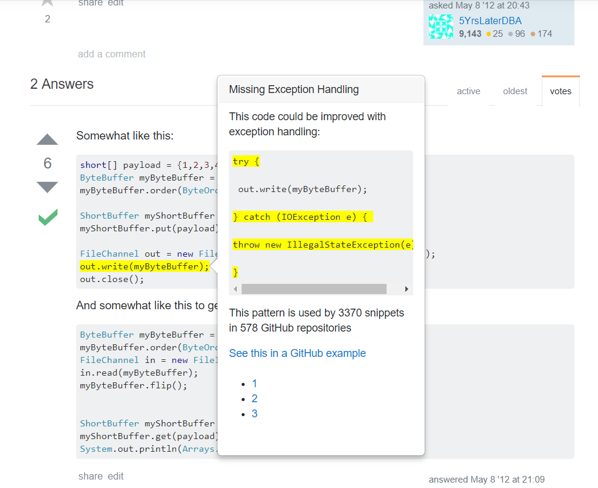

This week was pretty frustrating. I spent all of it trying to get pagination to work, to no avail. I switched libraries several times and tried every possible combination of the jQuery UI Dialog/Bootstrap popover with "Sweet Pages"/Bootstrap pagination.
There were multiple problems with each solution I attempted. I liked the look of Sweet Pages, and it was one of the few pagination solutions I could find online that you didn't have to hack to make it paginate within a div. However, trying to integrate it with a dialog/popover completely trashed it because the different panels wouldn't line up right and the special CSS it needed messed up everything (and I don't have the CSS skills to fix it). After going back and forth with different libraries, I ended up deciding to do an all-Bootstrap solution, which still doesn't work completely but I'm sticking with it.
The current iteration of my solution uses a pagination script based on this example. Right now Tianyi is working on helping me debug it; the problem is that the script doesn't recognize when the buttons are clicked, so a pagination-button click just defaults to sending the user to the top of the page.
Update: We've just discovered that the script is not being injected correctly into the page, so it only runs once and then it doesn't run again, which is why it doesn't register mouse-clicks. So now I need to rework how I'm injecting the script into the StackOverflow page.
Tianyi has been really helpful with this issue in more ways than one. I was feeling frustrated with my solutions not working, but he reminded me in an email that finding that something isn't working is progress -- and part of research. So I've been learning through this episode to take issues like this in stride and not to get too stressed about feeling "held back" when it takes awhile to find a working solution for a problem. I've also been learning a lot about Chrome extension development!
I'm taking this coming week off to go to Texas for my friend's wedding, but when I get back I'll work on fixing this pagination problem and move on. Our next step is to have the extension read test data and create popups based on that, I think. I'll be discussing it in more detail with Tianyi when I get back, so more on that next week! For now, here is the current look of the extension using the Bootstrap popover instead of the jQuery UI Dialog (and Bootstrap pagination without nice CSS -- I'll fix that):
